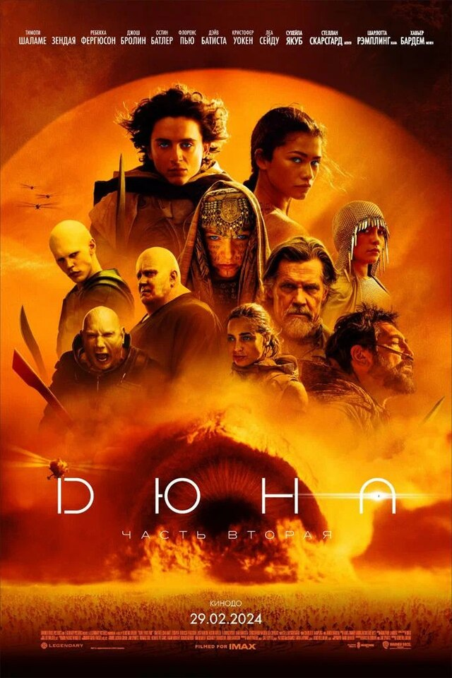

Новинки 2024 года
| Жанр: | фантастика, боевик, драма, приключения |
| Дата выхода: | 2024 |
| Режиссёр: | Дени Вильнёв |
| Продолжительность: | 166 мин./02:46 |
| Бюджет: | $190 000 000 |
| Премьера в мире: | 6 февраля 2024 |
| Сценарий: | Дени Вильнёв, Джон Спэйтс, Фрэнк Герберт |
| Продюсер: | Патрик МакКормик, Diala Al Raie, Trevor Bagge |
| Композитор: | Ханс Циммер |
| Художник: | Патрис Верметт, Эндрю Эклэнд-Сноу, Фридерик Бертяюм |
Эпический научно-фантастический фильм 2024 года, снятый на основе романа Фрэнка Герберта «Дюна», продолжение фильма «Дюна» (2021) и часть медиафраншизы с тем же названием. Режиссёр фильма — Дени Вильнёв, сценарист — Джон Спэйтс в соавторстве с Вильнёвом. Главные роли сыграли Тимоти Шаламе, Зендея, Ребекка Фергюсон, Хавьер Бардем, Джош Бролин, Дейв Батиста, Стеллан Скарсгард.
Работа над фильмом началась после того, как Legendary Entertainment купила права на экранизацию романа Герберта в 2016 году. Вильнёв подписал режиссёрский контракт в 2017 году, намереваясь создать двухсерийную экранизацию. Окончательное решение о съёмках второй части было принято после кассового успеха первой (в октябре 2021 года). Основные съёмки проходили в Будапеште, Италии, Иордании и Абу-Даби с июля по декабрь 2022 года.
За неполные первые три недели проката картина собрала более 500 миллионов долларов, став самым кассовым фильмом 2024 года и уже превзошла по сборам первую часть трилогии. Картина получила почти исключительно положительные отзывы критиков